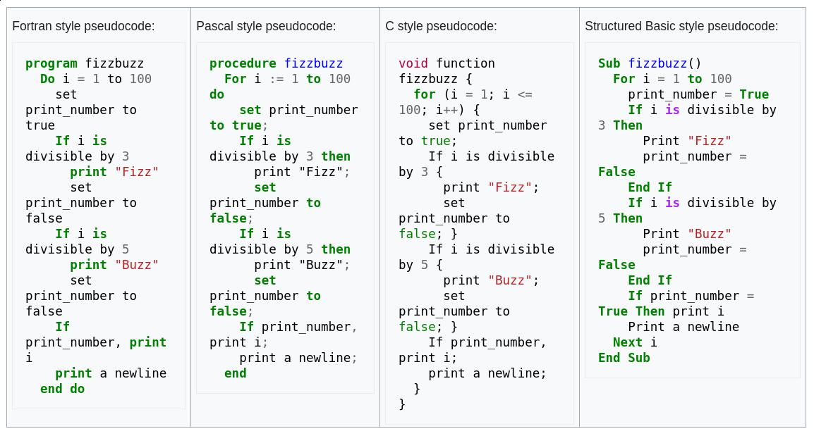
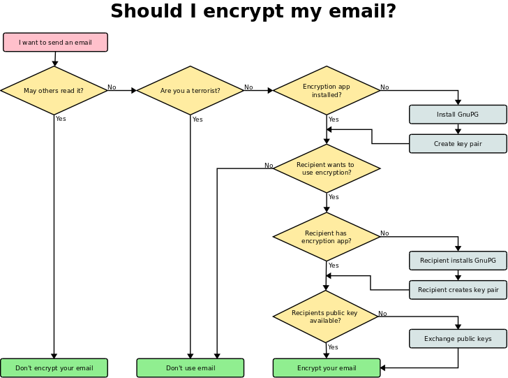

<!doctype html>
<html class="theme-5">
<meta charset="utf-8" />
<link href="../html-slideshow.bundle.min.css" rel="stylesheet" />
<link href="../style.css" rel="stylesheet" />
<script src="https://dbwebb.se/cdn/js/html-slideshow_v1.1.0.bundle.min.js"></script>

<title>Algorithms and design</title>

<script data-role="slide" type="text/html" data-markdown class="titlepage center">
# Algorithms and design
## Models, representation and development
### Mikael Roos
</script>


<script data-role="slide" type="text/html" data-markdown>
# Agenda

* Problem solving in general
* Polya’s Problem Solving Techniques
* Problem solving for algorithms
* Top down
* Bottom up
* Pseudo code
* Flowchart

</script>


<script data-role="slide" type="text/html" data-markdown class="titlepage center">
# Problem solving
## On a higher level
</script>


<script data-role="slide" type="text/html" data-markdown>
# How to solve problems?

* Take a walk in the park
* Sleep on it

* (both means to breath slowly and allow the brain to slow down and get some basic structure of the problem at hand)

* How can we help the brain to structure the problems?

</script>


<script data-role="slide" type="text/html" data-markdown>
# Small problems are easy?

* Large and unclear problems are real hard to deal with
* Organise and divide all large problems into small problems
* Smaller problems are easier to deal with
* When they are small enough they could even disappear since they were not really a prioritized problem...

</script>


<script data-role="slide" type="text/html" data-markdown>
# Understand the problem

* We need to understand the basics of the problem
* We need to put the problem into context
* We need to deal with semantics of the problem
* Are we solving the right problem?
* Are we solving the problem right?

</script>


<script data-role="slide" type="text/html" data-markdown>
# Define the problem

* Is the problem well-defined?
* Is the problem ill-defined?
* How good are the requirement specification?
* How good is the writer of the requirement specification?

</script>


<script data-role="slide" type="text/html" data-markdown>
# Well-defined problem

* Specific end goals
* Clearly expected solutions
* Easy to read, grasp and understand
* Ill-defined problems might lack these features

<p class="footnote">Well-defined problems allow for more initial planning than ill-defined problems.</p>

</script>


<script data-role="slide" type="text/html" data-markdown>
# Ill-defined problem

* Is it really a problem?
* Ask "why five times"
* What is the root problem of this problem?
* Find the root cause

<p class="footnote">Problem solving to find the underlying issue https://en.wikipedia.org/wiki/Five_whys.</p>

</script>


<script data-role="slide" type="text/html" data-markdown>
# Five whys

The vehicle will not start.

1. Why? – The battery is dead. (First why)
2. Why? – The alternator is not functioning. (Second why)
3. Why? – The alternator belt has broken. (Third why)
4. Why? – The alternator belt was well beyond its useful service life and not replaced. (Fourth why)
5. Why? – The vehicle was not maintained according to the recommended service schedule. (Fifth why, a root cause)

<p class="footnote">Solve the right problem.</p>

</script>


<script data-role="slide" type="text/html" data-markdown>
# Problem solving (linguistic)

* Pragmatics - how context contributes to meaning
* Semantics - how intepretation of the problem contributes to meaning

</script>


<script data-role="slide" type="text/html" data-markdown>
# Problem solving (areas)

* Psychology - finding solutions to problems encountered in life
* Cognitive sciences - research on how people do problem solving
* Logic - formally prove solutions to problems
* Engineering - products or processes, invent and prevent failure
* Military science - what is the end state?

<p class="footnote">Read more on https://en.wikipedia.org/wiki/Problem_solving.</p>

</script>


<script data-role="slide" type="text/html" data-markdown class="titlepage center">
# Problem solving
## Techniques for well-defined problems
### In the area of computer science and software engineering
</script>


<script data-role="slide" type="text/html" data-markdown>
# Polya

> Polya’s Problem Solving Techniques

1. Polya’s First Principle: Understand the problem
1. Polya’s Second Principle: Devise a plan
1. Polya’s Third Principle: Carry out the plan
1. Polya’s Fourth Principle: Look back

<p class="footnote">From a book released 1945 "How To Solve". Read more on https://math.berkeley.edu/~gmelvin/polya.pdf.</p>

</script>


<script data-role="slide" type="text/html" data-markdown>
# Polya - 1:<br>Understand the problem

* Do you understand all the words used in stating the problem?
* What are you asked to find or show?
* Can you restate the problem in your own words?
* Can you think of a picture or diagram that might help you understand the
problem?
* Is there enough information to enable you to find a solution?

</script>


<script data-role="slide" type="text/html" data-markdown>
# Polya - 2: Device a plan

> Many ways to solve a problem.

• Guess and check • Look for a pattern
• Make an orderly list • Draw a picture
• Eliminate possibilities • Solve a simpler problem
• Use symmetry • Use a model
• Consider special cases • Work backwards
• Use direct reasoning • Use a formula
• Solve an equation • Be ingenious

</script>


<script data-role="slide" type="text/html" data-markdown>
# Polya - 3: Carry out the plan

* Easier to do then to create the plan
* Follow through with care and patience, if you have the necessary skills
* Persist with the plan you have
* Discard it when it fails and pick another plan
* Do not be mislead and keep your focus

</script>


<script data-role="slide" type="text/html" data-markdown>
# Polya - 4: Look back

* Reflect and look back at what you have done
* What worked, and what didn’t
* Predict what strategy to use to solve future problems

</script>


<script data-role="slide" type="text/html" data-markdown>
# Tip on Polya

* Make a document
* Write down the headlines
    1. Understand the problem
    1. Device a plan
    1. Carry out the plan
    1. Look back
* Fill the headlines with text, while working on the problem

<p class="footnote">Writing stuff down is always a good thing.</p>

</script>


<script data-role="slide" type="text/html" data-markdown>
# Look back

* Think about some problems you did solve lately
* Did it turn out well or not?
* What were the issues that worked well or not?
* Bring this with you onto the next problem solving task

</script>


<script data-role="slide" type="text/html" data-markdown class="titlepage center">
# Problem solving
## Philosophies
</script>


<script data-role="slide" type="text/html" data-markdown>
# Philosophies

* YAGNI (You aint gonna need it)
* KISS (Keep it simple stupid)
* Dont overdo it / overengineering
* Pareto principle 80/20 (80% of the users uses 20% of the features)
* Bikeshedding (easy problems gets disproportionate attention)

</script>


<script data-role="slide" type="text/html" data-markdown class="titlepage center">
# Problem solving
## Tools and methods
</script>


<script data-role="slide" type="text/html" data-markdown>
# Tools and methods

* Top down
* Bottom up
* Pseudo code
* Flowchart

</script>


<script data-role="slide" type="text/html" data-markdown>
# Top down

* Stepwise design and refinement or decomposition
* Break down a system to gain insight into its sub-systems
* Formulate an overview of the system
* Specify (no detail) the first-level sub-systems
* Each sub-system is the refined in greater detail
* Continue until all elements/sub-systems are defined in detail

<p class="footnote">Read more on https://en.wikipedia.org/wiki/Top-down_and_bottom-up_design.</p>

</script>


<script data-role="slide" type="text/html" data-markdown>
# Top down...

> Top down approach starts with the big picture. It breaks down from there into smaller segments.

</script>


<script data-role="slide" type="text/html" data-markdown>
# Bottom up

* Piecing together of systems to give rise to more complex systems
* Make the original systems sub-systems of the emergent system
* Individual base elements are first specified in great detail
* These are then linked together to form larger subsystems
* A "seed" model
* Initially small but eventually grow in complexity and completeness

<p class="footnote">Read more on https://en.wikipedia.org/wiki/Top-down_and_bottom-up_design.</p>

</script>


<script data-role="slide" type="text/html" data-markdown>
# Bottom up...

> Bottom up starts with the pieces and makeing each piece work, before combining them into a larger and complete system.

</script>


<script data-role="slide" type="text/html" data-markdown>
# Top down vs bottom up

* Top-down approaches emphasize planning and a complete understanding of the system
* No coding can begin until a sufficient level of detail has been reached in the design
* Bottom-up emphasizes coding and early testing
* Begin as soon as the first module has been specified

</script>


<script data-role="slide" type="text/html" data-markdown>
# Top down vs bottom up...

> Modern software design approaches usually combine both top-down and bottom-up approaches

</script>


<script data-role="slide" type="text/html" data-markdown>
# Pseudo code

* Write normal language to express the code to be written
* Plan your code on a high level
* Explain or design a complex algorithm
* Sketch on a skeleton programming or dummy code
* No broad standard for pseudo code syntax exists

<p class="footnote">Read more on https://en.wikipedia.org/wiki/Pseudocode.</p>

</script>


<script data-role="slide" type="text/html" data-markdown class="center">
# Pseudo code variations

<figure>

<figcaption>Example on pseudo code in various target languages.</figcaption>
</figure>

</script>


<script data-role="slide" type="text/html" data-markdown class="titlepage center">
# Pseudo code standard
## But there is no standard...

<p class="footnote">Read more on http://users.csc.calpoly.edu/~jdalbey/SWE/pdl_std.html.</p>

</script>


<script data-role="slide" type="text/html" data-markdown>
# Pseudo code examples

```
Extract the next word from the line (good)
set word to get next token (poor)

Append the file extension to the name (good)
name = name + extension (poor)

FOR all the characters in the name (good)
FOR character = first to last (ok)
```

<p class="footnote">Good and less good pseudo code.</p>

</script>


<script data-role="slide" type="text/html" data-markdown>
# Pseudo code constructs

* SEQUENCE is a linear progression where one task is performed sequentially after another.
* WHILE is a loop (repetition) with a simple conditional test at its beginning.
* IF-THEN-ELSE is a decision (selection) in which a choice is made between two alternative courses of action.

</script>


<script data-role="slide" type="text/html" data-markdown>
# SEQUENCE

```
BEGIN
    READ height of rectangle
    READ width of rectangle
    COMPUTE area as height times width
END
```

<p class="footnote">More actions can be like READ, OBTAIN, GET, PRINT, DISPLAY, SHOW, COMPUTE, CALCULATE, DETERMINE, SET, INIT, INCREMENT, BUMP.</p>

</script>


<script data-role="slide" type="text/html" data-markdown>
# IF-THEN-ELSE

```
IF condition THEN
    sequence 1
ELSE
    sequence 2
ENDIF
```

</script>


<script data-role="slide" type="text/html" data-markdown>
# WHILE

```
WHILE condition
    sequence
ENDWHILE
```

</script>


<script data-role="slide" type="text/html" data-markdown>
# CASE

```
CASE expression OF
    condition 1 : sequence 1
    condition 2 : sequence 2
    ...
    condition n : sequence n
    OTHERS:
        default sequence
ENDCASE
```

</script>


<script data-role="slide" type="text/html" data-markdown>
# REPEAT-UNTIL

```
REPEAT
    sequence
UNTIL condition
```

</script>


<script data-role="slide" type="text/html" data-markdown>
# FOR

```
FOR iteration bounds
    sequence
ENDFOR
```

```
FOR each month of the year (good)
FOR month = 1 to 12 (ok)

FOR each employee in the list (good)
FOR empno = 1 to listsize (ok)
```

</script>


<script data-role="slide" type="text/html" data-markdown>
# NESTED CONSTRUCTS

```
SET total to zero
REPEAT
    READ Temperature
    IF Temperature > Freezing THEN
        INCREMENT total
    END IF
UNTIL Temperature < zero
Print total
```

</script>


<script data-role="slide" type="text/html" data-markdown>
# SUBPROCEDURES

```
CALL AvgAge with StudentAges
CALL Swap with CurrentItem and TargetItem
CALL Account.debit with CheckAmount
CALL getBalance RETURNING aBalance
CALL SquareRoot with orbitHeight RETURNING nominalOrbit
```

</script>


<script data-role="slide" type="text/html" data-markdown>
# EXCEPTION HANDLING

```
BEGIN
    statements
    EXCEPTION
        WHEN exception type
            statements to handle exception
        WHEN another exception type
            statements to handle exception
END
```

</script>


<script data-role="slide" type="text/html" data-markdown>
# "Adequate"

```
FOR X = 1 to 10
    FOR Y = 1 to 10
        IF gameBoard[X][Y] = 0
            Do nothing
        ELSE
            CALL theCall(X, Y) (recursive method)
            increment counter
        END IF
    END FOR
END FOR
```

</script>


<script data-role="slide" type="text/html" data-markdown>
# "Better"

```
Set moveCount to 1
FOR each row on the board
    FOR each column on the board
        IF gameBoard position (row, column) is occupied THEN
            CALL findAdjacentTiles with row, column
            INCREMENT moveCount
        END IF
    END FOR
END FOR
```

</script>


<script data-role="slide" type="text/html" data-markdown>
# "Pretty Good"

```
public boolean moveRobot (Robot aRobot)
{
    //IF robot has no obstacle in front THEN
        // Call Move robot
        // Add the move command to the command history
        // RETURN true
    //ELSE
        // RETURN false without moving the robot
    //END IF
}
```

</script>


<script data-role="slide" type="text/html" data-markdown>
# Flowchart

* A solution model to a given problem
* Diagram representing a workflow or process
* Representing a algorithm
* Step by step to solve a task

<p class="footnote">Read more on https://en.wikipedia.org/wiki/Flowchart.</p>

</script>


<script data-role="slide" type="text/html" data-markdown class="center">
# Flowchart lamp

<figure>

<figcaption>A simple flowchart representing a process for dealing with a non-functioning lamp.</figcaption>
</figure>

</script>


<script data-role="slide" type="text/html" data-markdown class="center">
# Flowchart for loop

<figure>

<figcaption>Flowchart of a C-style for loop.</figcaption>
</figure>

</script>


<script data-role="slide" type="text/html" data-markdown>
# Flowchart

* Help visualize what is going on
* Help understand a process
* Find less-obvious features within the process, like flaws and bottlenecks

</script>


<script data-role="slide" type="text/html" data-markdown>
# Flowchart general

* Ishikawa defined the flowchart as one of the seven basic tools of quality control
* Many names - process map, business process model, process flow diagram, work flow diagram, business flow diagram...
* UML activity diagram

<p class="footnote">Kaoru Ishikawa was a Japanese organizational theorist, noted for his quality management innovations.<br><br>UML is the Unified Modelling Language.</p>

</script>


<script data-role="slide" type="text/html" data-markdown>
# Flowchart drawing

* A processing step, usually called activity, and denoted as a rectangular box.
* A decision, usually denoted as a diamond.
* Arrows to show the flow and order of the processes
* Flowcharts flow from top to bottom and left to right

</script>


<script data-role="slide" type="text/html" data-markdown>
# ANSI/ISO Shape    # xkcd Flowchart
    
<figure>

<figcaption>For fun - xkcd on flowcharts https://xkcd.com/518/.</figcaption>
</figure>

</script>


<script data-role="slide" type="text/html" data-markdown>
# ANSI/ISO Shape

| Shape | Name | Description |
|-------|------|-------------|
|  | Decision | Conditional operation that determines which one of the two paths the program will take. |
|  | Input/Output | The process of inputting and outputting data. |

<p class="footnote">The symbols are ISO/ANSI standards since 1960 and revised 1985. More symbols exists.</p>

</script>


<script data-role="slide" type="text/html" data-markdown class="center">
# Flowchart Dia

<figure>

<figcaption>Example on flowchart using the Dia drawing tool<br>http://dia-installer.de/shapes/Flowchart/index.html.en.</figcaption>
</figure>

</script>


<script data-role="slide" type="text/html" data-markdown>
# Summary

* Problem solving in general
* Understand the problem
    * Semantics (intepretation) and pragmatics (context)
* Top down
* Bottom up
* Pseudo code
* Flowchart

</script>


<script data-role="slide" type="text/html" data-markdown class="center">
# xkcd Flowchart

<figure>

<figcaption>For fun - xkcd on flowcharts https://xkcd.com/518/.</figcaption>
</figure>

</script>


<script data-role="slide" type="text/html" data-markdown class="titlepage center">
# The end
</script>


<script data-role="slide" type="text/html" data-markdown>
</script>

</html>
